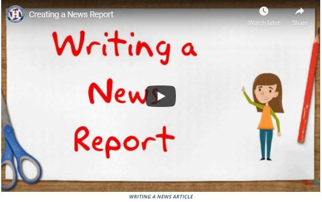

How to Write a School News Article
News articles are designed to relate the news. The article is written to inform readers. It is factual, meant to present information in a quick, digestible form. The following elements of writing a newspaper article are important, so heed them well.
Research and Fact Gathering
Perhaps the #1 rule of writing a newspaper article is that you are factual. You do not want to make assumptions or fabricate information. Before you can write your article, you must have as many of the facts as you can gather. Here are some facts that you will need to find out:
- What? The specific event that took place.
- Who? The people involved.
- Where? Places.
- When? Date and time.
- Why? Reasons for the event taking place.
- How? Connecting the facts.
You will also need to gather as much detail as you can. This will involve:
- Interviewing people connected to the story.
- Gathering quotes from people (be exact…never paraphrase what they said). Cite names, unless they specifically request to remain anonymous.
- Resolving conflicting facts from individuals.
- Researching public information (always cite your sources, so write them down).
Once you have all your facts, you can begin to write your article.
The Headline or Title
For a news article, this is where you have most of your creativity. The headline must grab the attention of the reader. It needs to be catchy, emotion evoking, or creates curiosity. Be creative with it. In many instances, you will spend more time trying to come up with the perfect headline than you will in the actual writing.
The Article Body
The main news article itself is written from bottom down. In other words, the most important information comes first and each paragraph gives less and less details. Whereas a novel, for example, starts you out with little information and you must read to the end to get all of it.
In news article writing, however, you want to provide the key information right up front. You start with the 6 questions you should have already answered in your research:
- What?
- Who?
- Where?
- When?
- Why?
- How?
Your first two paragraphs need to answer all these questions. For example:
The Varsity football team beat Smith High School last Saturday, 21 to 7, in a rematch that vindicated Coach John’s prediction of a win during Friday’s pep-rally. Our first home win this season at our very own Jane Doe Field was a morale booster to the entire student body. Quarterback, Joe Baker completed 18 out of 24 passes to cement the win.
This was only a simple example, but almost all the questions are actually answered in the first two sentences. From here you can add more inconsequential details, such as receiving yards, rushing yards, and so forth. You will at some point include quotes from people such as the coach, the quarterback, a receiver, a fan in the stands, and perhaps the principal. Although for quotes, you don’t want to include too many, but having two or three is important. By the time you get to the end of the article, you are simply expanding upon what the reader already knows from the first two paragraphs you wrote.
Don’t make your paragraphs long—two to three sentences each. Your word count will need to stay around the 500 word count or less, generally speaking.
SEE WHAT OTHER SCHOOLS ARE DOING
Below are just a few examples of what other schools are doing with their newspapers. Take a look and become inspired and find ideas.